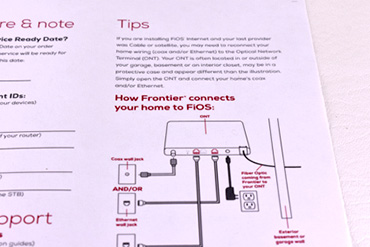
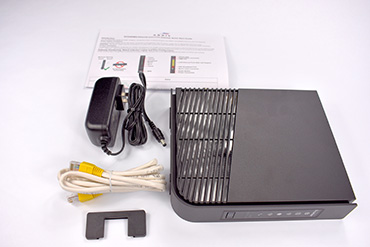

If the service ready date is today or in the past, you can proceed right now. Let’s get started!
1.On top of your box there is a Quick Set-Up-Guide to help you set up your service.

2.On the Tips page is information on your Optical Network Terminal, your ONT. This is how Frontier connects Fiber service to your home.
3.If your last internet provider was cable or satellite, you may need to check your ONT (it may look different than this one) to make sure your home’s Coax/Ethernet is connected.

4.We will start with the Internet Router. Your box will have a router, and an Ethernet cable.
5.As well as coax cables and a splitter.
6.This installation is for customers that do not require a MoCA adapter. If you have one in your box, go to the instructions for FiOS installation with MoCA Adapter.
7.First, insert the base support into the router.
8.Like this. Make sure your router stands vertical.
9.Now is a good time to flip your router over and make a note on the back of the Quick Setup Guide of your Wi-Fi name and password.
10.You will need this to connect your devices, like your laptop or your tablet.
11.Let’s start with the router installation. Lay out the splitter and the router.
12.Connect a coax cable from your coax wall jack…
13.To the in port on the splitter.
14.From the splitter, connect one coax cable…
15.To the router. Make sure the coax cables are secured tightly.
16.Next connect the Ethernet cable from the Ethernet jack in your wall…
17.To the router.
18.Now you can connect your power cord into the router.
19.And the other end into the outlet.
20.Turn your router on. The button is right under the coax cable connection.
21.The lights on your router will flash with green lights.
22.Your internet light will be blue. This can take a few minutes, so be patient.
23.If the light is red, please call the Help Center for troubleshooting tips at 1.866.739.4319.
24.Once your router is working, you will now find the Wi-Fi network name on your devices and enter the password in each of them.
25.You are all set up for your FiOS internet service!
26.If your service includes FiOS Digital Voice, now you can connect your phone jack to from the wall, to the phone line jack on the back of your router.